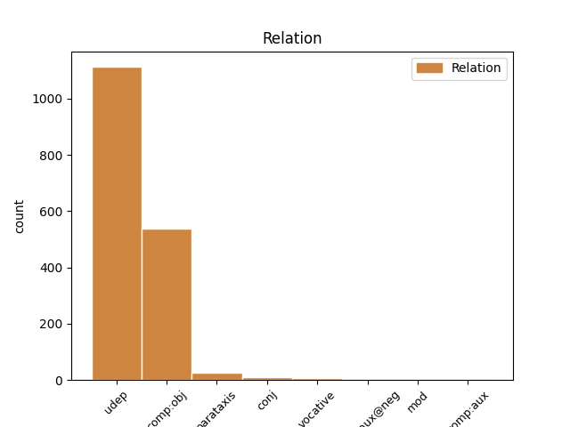
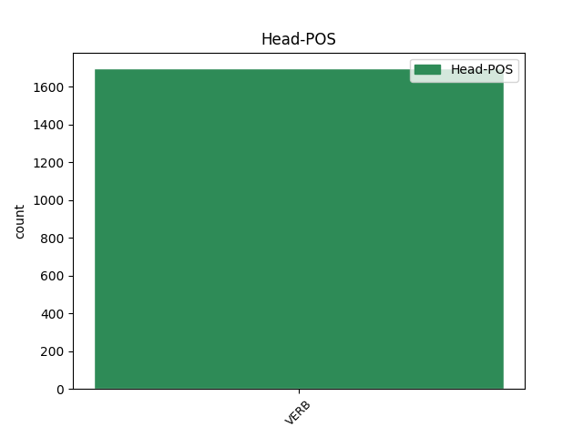
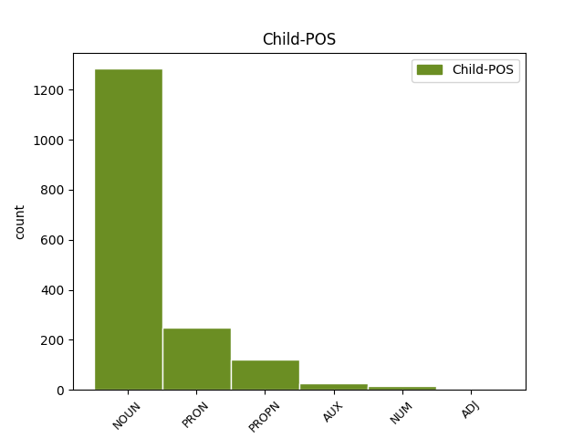

Distribution of features within this leaf



Agreement Rules sorted by frequency.
- When the dependent token is the underspecified dependency(udep) of the head token, and the head token is VERB and the dependent token is NOUN.
1 Oahpaheaddji _ _ _ _ 0 _ _ _
2 šattai _ _ _ _ 0 _ _ _
3 geavahit _ _ _ _ 0 _ _ _
4 buot _ _ _ _ 0 _ _ _
5 čehppodagas _ _ _ _ 0 _ _ _
6 , _ _ _ _ 0 _ _ _
7 amas _ _ _ _ 0 _ _ _
8 massit _ _ _ _ 0 _ _ _
9 vátna _ _ _ _ 0 _ _ _
10 oahppiidis _ _ _ _ 0 _ _ _
11 , _ _ _ _ 0 _ _ _
12 lohku _ _ _ _ 0 _ _ _
13 ii _ _ _ _ 0 _ _ _
14 ožžon _ _ _ _ 0 _ _ _
15 heađisge _ _ _ _ 0 _ _ _
16 njiedjat _ _ _ _ 0 _ _ _
17 vuollel _ _ _ _ 0 _ _ _
18 viđa _ _ _ _ 0 _ _ _
19 , _ _ _ _ 0 _ _ _
20 dasgo _ _ _ _ 0 _ _ _
21 dalle _ _ _ _ 0 _ _ _
22 gielddas gielda NOUN N Case=Loc|Number=Sing 25 udep _ _
23 dahje _ _ _ _ 0 _ _ _
24 Skuvlaráđđehusas _ _ _ _ 0 _ _ _
25 lei leat VERB V Mood=Ind|Number=Sing|Person=3|Tense=Past|VerbForm=Fin 0 _ _ _
26 vuoigatvuohta _ _ _ _ 0 _ _ _
27 loahpahit _ _ _ _ 0 _ _ _
28 diekkár _ _ _ _ 0 _ _ _
29 gánnetmeahttun _ _ _ _ 0 _ _ _
30 fálaldaga _ _ _ _ 0 _ _ _
31 . _ _ _ _ 0 _ _ _
1 Oahpaheaddji _ _ _ _ 0 _ _ _
2 šattai _ _ _ _ 0 _ _ _
3 geavahit _ _ _ _ 0 _ _ _
4 buot _ _ _ _ 0 _ _ _
5 čehppodagas _ _ _ _ 0 _ _ _
6 , _ _ _ _ 0 _ _ _
7 amas _ _ _ _ 0 _ _ _
8 massit _ _ _ _ 0 _ _ _
9 vátna _ _ _ _ 0 _ _ _
10 oahppiidis _ _ _ _ 0 _ _ _
11 , _ _ _ _ 0 _ _ _
12 lohku _ _ _ _ 0 _ _ _
13 ii _ _ _ _ 0 _ _ _
14 ožžon _ _ _ _ 0 _ _ _
15 heađisge _ _ _ _ 0 _ _ _
16 njiedjat _ _ _ _ 0 _ _ _
17 vuollel _ _ _ _ 0 _ _ _
18 viđa _ _ _ _ 0 _ _ _
19 , _ _ _ _ 0 _ _ _
20 dasgo _ _ _ _ 0 _ _ _
21 dalle _ _ _ _ 0 _ _ _
22 gielddas _ _ _ _ 0 _ _ _
23 dahje _ _ _ _ 0 _ _ _
24 Skuvlaráđđehusas _ _ _ _ 0 _ _ _
25 lei leat VERB V Mood=Ind|Number=Sing|Person=3|Tense=Past|VerbForm=Fin 0 _ _ _
26 vuoigatvuohta _ _ _ _ 0 _ _ _
27 loahpahit _ _ _ _ 0 _ _ _
28 diekkár _ _ _ _ 0 _ _ _
29 gánnetmeahttun _ _ _ _ 0 _ _ _
30 fálaldaga fálaldat NOUN N Case=Acc|Number=Sing 25 comp:obj _ SpaceAfter=No
31 . _ _ _ _ 0 _ _ _
1 Ohcci _ _ _ _ 0 _ _ _
2 geas gii PRON Pron Case=Loc|Number=Sing|PronType=Rel 3 udep _ _
3 lea leat VERB V Mood=Ind|Number=Sing|Person=3|Tense=Pres|VerbForm=Fin 0 _ _ _
4 earenoamáš _ _ _ _ 0 _ _ _
5 gelbbolašvuohta _ _ _ _ 0 _ _ _
6 sáhttá _ _ _ _ 0 _ _ _
7 árvvoštallojuvvot _ _ _ _ 0 _ _ _
8 seniorráđđeaddin _ _ _ _ 0 _ _ _
9 . _ _ _ _ 0 _ _ _
1 Gállá _ _ _ _ 0 _ _ _
2 oinnii oaidnit VERB V Mood=Ind|Number=Sing|Person=3|Tense=Past|VerbForm=Fin 0 _ _ _
3 Fávnnas Fávdna PROPN N Case=Loc|Number=Sing 2 udep _ _
4 ođđa _ _ _ _ 0 _ _ _
5 fiinna _ _ _ _ 0 _ _ _
6 dávgebissu _ _ _ _ 0 _ _ _
7 ja _ _ _ _ 0 _ _ _
8 gihpu _ _ _ _ 0 _ _ _
9 njuolaid _ _ _ _ 0 _ _ _
10 . _ _ _ _ 0 _ _ _
1 Geahča _ _ _ _ 0 _ _ _
2 , _ _ _ _ 0 _ _ _
3 dá _ _ _ _ 0 _ _ _
4 lea _ _ _ _ 0 _ _ _
5 áhkkát _ _ _ _ 0 _ _ _
6 , _ _ _ _ 0 _ _ _
7 váldde váldit VERB V Mood=Imp|Number=Sing|Person=2|VerbForm=Fin 0 _ _ _
8 su son PRON Pron Case=Acc|Number=Sing|Person=3|PronType=Prs 7 comp:obj _ _
9 ja _ _ _ _ 0 _ _ _
10 mana _ _ _ _ 0 _ _ _
11 ! _ _ _ _ 0 _ _ _
1 Gánda gánda NOUN N Case=Nom|Number=Sing 4 parataxis _ SpaceAfter=No
2 : _ _ _ _ 0 _ _ _
3 Áhpái _ _ _ _ 0 _ _ _
4 fierai fierrat VERB V Mood=Ind|Number=Sing|Person=3|Tense=Past|VerbForm=Fin 0 _ _ _
5 . _ _ _ _ 0 _ _ _
1 Dán _ _ _ _ 0 _ _ _
2 mii _ _ _ _ 0 _ _ _
3 gávnnaimet _ _ _ _ 0 _ _ _
4 , _ _ _ _ 0 _ _ _
5 dutkka dutkat VERB V Mood=Imp|Number=Sing|Person=2|VerbForm=Fin 0 _ _ _
6 mat _ _ _ _ 0 _ _ _
7 leago leat AUX V Mood=Ind|Number=Sing|Person=3|Tense=Pres|VerbForm=Fin 5 conj _ _
8 dat _ _ _ _ 0 _ _ _
9 du _ _ _ _ 0 _ _ _
10 bártni _ _ _ _ 0 _ _ _
11 gákti _ _ _ _ 0 _ _ _
12 . _ _ _ _ 0 _ _ _
1 Aarebrot _ _ _ _ 0 _ _ _
2 maiddái _ _ _ _ 0 _ _ _
3 dutkkai dutkat VERB V Mood=Ind|Number=Sing|Person=3|Tense=Past|VerbForm=Fin 0 _ _ _
4 Sámedikke _ _ _ _ 0 _ _ _
5 jienasteddjiid _ _ _ _ 0 _ _ _
6 Sámedikke _ _ _ _ 0 _ _ _
7 vuosttaš _ _ _ _ 0 _ _ _
8 válggas _ _ _ _ 0 _ _ _
9 1989:s 1989 NUM Num Case=Loc|Number=Sing|NumType=Card 3 udep _ SpaceAfter=No
10 , _ _ _ _ 0 _ _ _
11 ja _ _ _ _ 0 _ _ _
12 lohká _ _ _ _ 0 _ _ _
13 iežas _ _ _ _ 0 _ _ _
14 dárkilit _ _ _ _ 0 _ _ _
15 čuvvon _ _ _ _ 0 _ _ _
16 mielde _ _ _ _ 0 _ _ _
17 Sámediggeválggain _ _ _ _ 0 _ _ _
18 dan _ _ _ _ 0 _ _ _
19 rájes _ _ _ _ 0 _ _ _
20 . _ _ _ _ 0 _ _ _
1 Jagis _ _ _ _ 0 _ _ _
2 2005 _ _ _ _ 0 _ _ _
3 Sámediggi _ _ _ _ 0 _ _ _
4 álggahii álggahit VERB V Mood=Ind|Number=Sing|Person=3|Tense=Past|VerbForm=Fin 0 _ _ _
5 Divvuma Divvun PROPN N Case=Acc|Number=Sing 4 comp:obj _ SpaceAfter=No
6 , _ _ _ _ 0 _ _ _
7 mii _ _ _ _ 0 _ _ _
8 lei _ _ _ _ 0 _ _ _
9 prošeakta _ _ _ _ 0 _ _ _
10 ja _ _ _ _ 0 _ _ _
11 bargojoavku _ _ _ _ 0 _ _ _
12 ráhkadit _ _ _ _ 0 _ _ _
13 sámegielaid _ _ _ _ 0 _ _ _
14 sátnedivvunprográmmaid _ _ _ _ 0 _ _ _
15 . _ _ _ _ 0 _ _ _
1 Mánát mánná NOUN N Case=Nom|Number=Plur 3 vocative _ SpaceAfter=No
2 , _ _ _ _ 0 _ _ _
3 váldet váldit VERB V Mood=Imp|Number=Plur|Person=2|VerbForm=Fin 0 _ _ _
4 alcceseattet _ _ _ _ 0 _ _ _
5 láibevajahasaid _ _ _ _ 0 _ _ _
6 ! _ _ _ _ 0 _ _ _
1 Mun _ _ _ _ 0 _ _ _
2 jurddašin jurddašit VERB V Mood=Ind|Number=Sing|Person=1|Tense=Past|VerbForm=Fin 0 _ _ _
3 iežainan _ _ _ _ 0 _ _ _
4 , _ _ _ _ 0 _ _ _
5 leažžá leat AUX V Mood=Pot|Number=Sing|Person=3|Tense=Pres|VerbForm=Fin 2 parataxis _ _
6 go _ _ _ _ 0 _ _ _
7 duohta _ _ _ _ 0 _ _ _
8 ? _ _ _ _ 0 _ _ _
1 Dat _ _ _ _ 0 _ _ _
2 lea leat AUX V Mood=Ind|Number=Sing|Person=3|Tense=Pres|VerbForm=Fin 14 comp:obj _ _
3 nástealmmi _ _ _ _ 0 _ _ _
4 lihkatmeahttun _ _ _ _ 0 _ _ _
5 guovddáš _ _ _ _ 0 _ _ _
6 , _ _ _ _ 0 _ _ _
7 man _ _ _ _ 0 _ _ _
8 birra _ _ _ _ 0 _ _ _
9 eará _ _ _ _ 0 _ _ _
10 násttit _ _ _ _ 0 _ _ _
11 jorret _ _ _ _ 0 _ _ _
12 , _ _ _ _ 0 _ _ _
13 Gállá _ _ _ _ 0 _ _ _
14 muitalii muitalit VERB V Mood=Ind|Number=Sing|Person=3|Tense=Past|VerbForm=Fin 0 _ _ _
15 bártniidasas _ _ _ _ 0 _ _ _
16 . _ _ _ _ 0 _ _ _
1 Ánne Ánne PROPN N Case=Nom|Number=Sing 3 vocative _ SpaceAfter=No
2 , _ _ _ _ 0 _ _ _
3 rávkka rávkat VERB V Mood=Imp|Number=Sing|Person=2|VerbForm=Fin 0 _ _ _
4 eatnistat _ _ _ _ 0 _ _ _
5 eambbo _ _ _ _ 0 _ _ _
6 ruđa _ _ _ _ 0 _ _ _
7 ! _ _ _ _ 0 _ _ _
1 Silje _ _ _ _ 0 _ _ _
2 lasiha lasihit VERB V Mood=Ind|Number=Sing|Person=3|Tense=Pres|VerbForm=Fin 0 _ _ _
3 3-0 3-0 NUM Num Case=Acc|Number=Sing|NumType=Card 2 comp:obj _ _
4 nuppi _ _ _ _ 0 _ _ _
5 vuorus _ _ _ _ 0 _ _ _
6 . _ _ _ _ 0 _ _ _
1 Mon _ _ _ _ 0 _ _ _
2 in _ _ _ _ 0 _ _ _
3 leat _ _ _ _ 0 _ _ _
4 dugo _ _ _ _ 0 _ _ _
5 Sivvar Sivvar PROPN N Case=Nom|Number=Sing 8 comp:aux _ SpaceAfter=No
6 - _ _ _ _ 0 _ _ _
7 mii _ _ _ _ 0 _ _ _
8 láve lávet VERB V Mood=Ind|Number=Sing|Person=3|Tense=Pres|VerbForm=Fin 0 _ _ _
9 bissuin _ _ _ _ 0 _ _ _
10 ja _ _ _ _ 0 _ _ _
11 beatnagiin _ _ _ _ 0 _ _ _
12 mannat _ _ _ _ 0 _ _ _
13 dugo _ _ _ _ 0 _ _ _
14 livččii _ _ _ _ 0 _ _ _
15 dáčča _ _ _ _ 0 _ _ _
16 . _ _ _ _ 0 _ _ _
1 Muđui _ _ _ _ 0 _ _ _
2 ledje leat AUX V Mood=Ind|Number=Plur|Person=3|Tense=Past|VerbForm=Fin 7 comp:aux@neg _ _
3 johtti _ _ _ _ 0 _ _ _
4 oahpaheaddjit _ _ _ _ 0 _ _ _
5 , _ _ _ _ 0 _ _ _
6 muhto _ _ _ _ 0 _ _ _
7 eai ii VERB V Mood=Ind|Number=Plur|Person=3|Polarity=Neg|VerbForm=Fin 0 _ _ _
8 doarvái _ _ _ _ 0 _ _ _
9 . _ _ _ _ 0 _ _ _
Disagree Examples:
1 Golbma _ _ _ _ 0 _ _ _
2 čáppa _ _ _ _ 0 _ _ _
3 , _ _ _ _ 0 _ _ _
4 doaimmalaš _ _ _ _ 0 _ _ _
5 nieidda _ _ _ _ 0 _ _ _
6 livžo livžut VERB V Mood=Ind|Number=Plur|Person=3|Tense=Past|VerbForm=Fin 0 _ _ _
7 áhčiset _ _ _ _ 0 _ _ _
8 riegádanbeaivve riegádanbeaivi NOUN N Case=Gen|Number=Sing 6 udep _ SpaceAfter=No
9 . _ _ _ _ 0 _ _ _
1 Gravismearka _ _ _ _ 0 _ _ _
2 adnojuvvo atnit VERB V* Mood=Ind|Number=Sing|Person=3|Tense=Pres|VerbForm=Fin|Voice=Pass 0 _ _ _
3 sámegielas _ _ _ _ 0 _ _ _
4 dušše _ _ _ _ 0 _ _ _
5 muhtun _ _ _ _ 0 _ _ _
6 vierronamain vierronamma NOUN N Case=Loc|Number=Plur 2 udep _ SpaceAfter=No
7 . _ _ _ _ 0 _ _ _
1 Guokte _ _ _ _ 0 _ _ _
2 nissona nisu NOUN N Case=Gen|Number=Sing 3 comp:obj _ _
3 ferdneba ferdnet VERB V Mood=Ind|Number=Dual|Person=3|Tense=Pres|VerbForm=Fin 0 _ _ _
4 milluin _ _ _ _ 0 _ _ _
5 . _ _ _ _ 0 _ _ _
1 Guokte _ _ _ _ 0 _ _ _
2 nissona _ _ _ _ 0 _ _ _
3 ferdneba ferdnet VERB V Mood=Ind|Number=Dual|Person=3|Tense=Pres|VerbForm=Fin 0 _ _ _
4 milluin millu NOUN N Case=Com|Number=Sing 3 udep _ SpaceAfter=No
5 . _ _ _ _ 0 _ _ _
1 Henrik _ _ _ _ 0 _ _ _
2 oaččui oažžut VERB V Mood=Ind|Number=Sing|Person=3|Tense=Past|VerbForm=Fin 0 _ _ _
3 buot _ _ _ _ 0 _ _ _
4 gussiid guossi NOUN N Case=Acc|Number=Plur 2 comp:obj _ _
5 dearvan _ _ _ _ 0 _ _ _
6 nuppi _ _ _ _ 0 _ _ _
7 gearddi _ _ _ _ 0 _ _ _
8 čađa _ _ _ _ 0 _ _ _
9 , _ _ _ _ 0 _ _ _
10 gos _ _ _ _ 0 _ _ _
11 ii _ _ _ _ 0 _ _ _
12 buollán _ _ _ _ 0 _ _ _
13 . _ _ _ _ 0 _ _ _